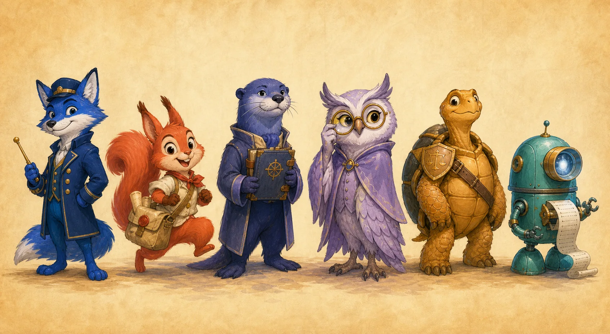
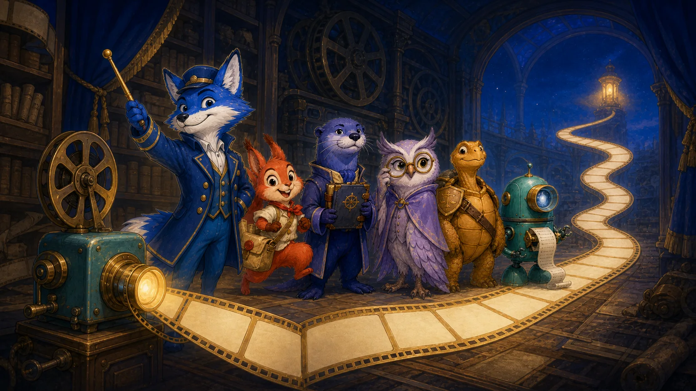
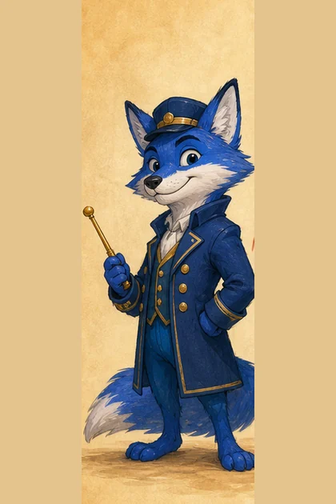

Original cartoon replay · eight scenes
證據不是字幕，它決定結局。
把 Goal、Source Binding、Finder、Verifier、Ledger、Review、Action 與 Reconciliation 變成一部可以暫停、倒帶、切換結局的卡通電影。你看到的不是「Agent 說完成」，而是完成如何被證明。

ORIGINAL CAST · SIX ROLES每位角色代表一個不能互相取代的治理責任。
01
Evidence Replay Cinema
八幕重播：從意圖到可證明完成
按播放讓故事自動推進，或點擊時間軸逐幕檢查。右側卡片把畫面翻回 record、binding 與 derived state；最後一幕可切換「證據完整」和「provider outcome unknown」兩種結局。
THE PROOF BEFORE THE END
一部關於 evidence、state 與 reconciliation 的互動短片
SANITIZED TEACHING REPLAY · NOT A LIVE RUN

SCENE 01 / 08
CONTRACT BOUND

Captain RootGOAL KEEPER
先把「要完成什麼」拍成底片
沒有凍結的目標、範圍與驗收條件，就沒有可被重播的結局。
選擇最後一幕的 provider 狀態
結局只由可重驗輸入改變，不靠旁白投票。
01 · RECOMPUTE重播判斷從 contract、events、evidence 與 receipts 重新推導狀態。
02 · DO NOT RESEND不重送副作用Provider reconciliation 是查證已發生什麼，不是再送一次請求。
03 · FAIL CLOSED未知就停缺 receipt、binding drift 或 unresolved P0/P1 都不能剪成完成結局。
02
Character Atlas
六個卡通人物，六個不能混在一起的責任
點角色可跳到代表場景。Finder 不能驗證自己的 finding；Ledger 只從事件推導狀態；Sentinel 不因畫面漂亮就放行；Echo 遇到 unknown 只查證，不盲目重送。
03
Source Credits
電影是呈現層；程式與合約才是權威來源
每一幕的敘事都對回 repository 內現有 contract 與實作。頁面不建立 run、不發 action token，也不把生成插圖當成政策輸入。
界線：本頁是 sanitized、deterministic 的教學重播。畫面與 demo JSON 不可授權 push、merge、deploy 或任何外部副作用；Graph／動畫／旁白也不能取代目前 revision 的 typed evidence 與 provider receipt。